Revived 3.0 Update¶
Welcome back to 3.0 survivor! A lot has changed since you were last here.¶
Highlights¶
- New Items, Dual Uzi, Pouch Vest, Knights Helmet
- New Story Mission, Buyer's Remorse
- New Survival Swamplands
- Damage mods changes
Damage Overall!¶
- Mod Tier Damage, every gun and melee mod now provides damage based on its tier.
- The tier damage amount is tied to the upgrade level of the mods.
- Damage mods are readjusted to balance the additional damage from tier damage.
Modifiers! Modifiers! Modifiers!¶
- All stats and mechanics calculations are now done by a new modifiers system. Used in item mods, skills, status effects, passives.
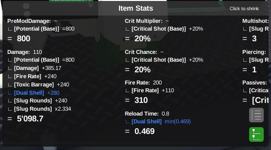
-
Modifier Breakdown screen on workbench stats. Shows you how the item stats is being affected.
- Modifiers also provide special mechanics such as activation input handling or game event reaction.
-
Frostbite redesigned.
- Every damaging shot charges Frostbite, once charged, you can press [Q] to activate it.
- When activated, shooting enemies causes an Ice Blast freezing nearby enemies and applies Frostbitten debuff.
- Ice Blast: Area of effect explosion that weak-stuns Targets within the Radius and apply Frostbitten to each enemy. (Weak-stun only stuns basic enemies.)
- Frostbitten: Does Premod Damage as frost damage once per second and when enemies dropped below 10% of max health will instantly shatter and die.
-
Electrocute changes, renamed from Electric Charge.
- Now has a 3s cooldown shown on the weapon modifier state hud.
- Damage now uses Premod Damage.
-
Most clothing with passives now has a base modifier for their passives.
New Items¶
- New Tier 5 Submachine gun, Dual Uzi.
- [Passive] Dual Focus When in focus, you instinctively aim each gun at an enemy closest to the center of your screen.
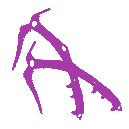
- New Tier 4 Edged Melee, Ice Picks.
- Two picks for ice picking.
- [Passive] Frozen Tip: Enemies hit are affected with a 1s Frostbitten debuff. Cooldown: 2 seconds
- [Passive] Peak Reacher: Focusing while in air lets you mount onto walls with an ice pick.
- [Passive] Chained Attack:Has built-in auto swing.
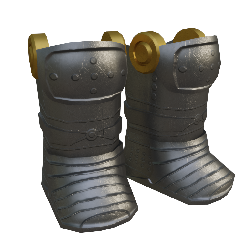
- Added new shoes, Greaves and Sabatons.
- [Passive] Chivalrous Kick: Sliding into enemies knocks the away.
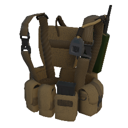
- Added new chest clothing, Pouch Vest.
- [Passive] Bullet Recouper: Hitscan shots that missed have a 50% chance to be recouped.
- New HMG modifier, Point-Guard Bulwark.
- Additional Armor Points build up while in focus at the reduction of your Focus Movespeed.
- New Chest modifier, Damage Divider.
- When armor > 0, the damage you take is divided to health and armor damage with an additional damage reduction.
- New Melee modifier, Melee Health Reaper.
- Killing 3 enemies within a time window heals you.
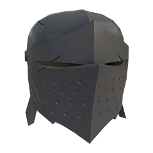
- New Head gear, Knight's Helmet.
- The helmet of ser Duncan the big.
- [Passive] Helm Overwhelm: When you take armor damage, you heal 10% damage of the damage taken.
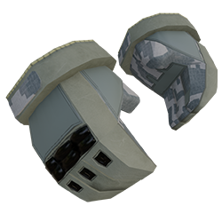
- New Gloves, Military Gloves.
- Standard digital camouflage gloves, handy for holding guns.
- [Passive] Instinctive Bullseye: When landing a shot on an enemy, the first hitscan will be redirected at the enemies' head if they have one.
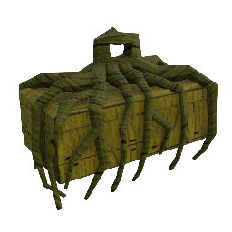
- New crate, Mangrove Crate. From Survival: Swamplands.
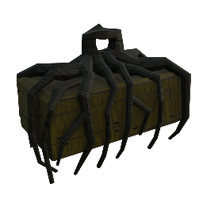
- New crate, Deadly Mangrove Crate. From Survival: Swamplands.
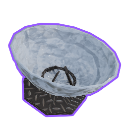
- New Tier 3 Commodity: Solar Concentrator. A dish that concentrates sun light into a point.
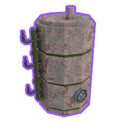
- New Tier 3 Commodity: Fermentation Vat. A vat for fermentation.
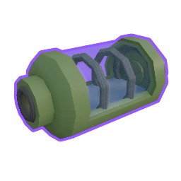
- New Tier 3 Commodity: Hydroponic Capsule. A mechanic to leverage physics to excert calculated push and pull forces.
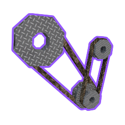
- New Tier 3 Commodity: Pulley Mechanics. A mechanic to leverage physics to excert calculated push and pull forces.

- New Tier 4 Commodity: Biochar Kiln. A system that turns organic waste into biochar, a charcoal alternative, by heating it in high heat.
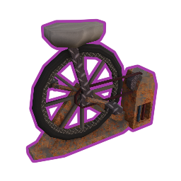
- New Tier 4 Commodity: Bicycle Powered Generator. Generates electricity by peddling..
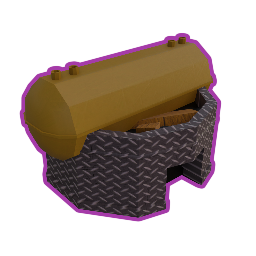
- New Tier 4 Commodity: Solar Water Still. A water purifier that uses the sun's energy to evaporate dirty water into clean water.
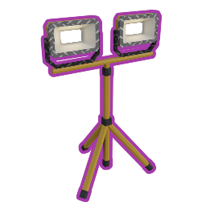
- New Tier 4 Commodity: Flood Lights. A powerful spot light for emergencies.
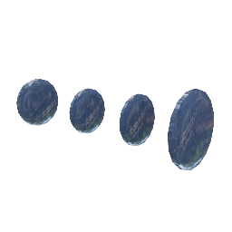
- A new component, Clear Lens, for general crafting. Clear lens that can be used to magnify or minify.
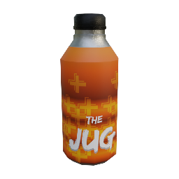
- New drink: Juggernog. Gives you an additional 100 max health for 10 minutes.
- Obtained from Faction Distributions.
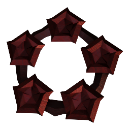
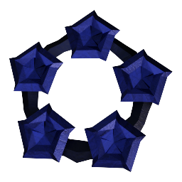
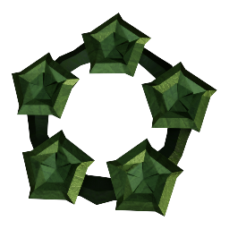
- New Offerings item, Crimson, Azure and Sage offerings are thew new way to obtain unlockables. Most item unlockables are removed from the Gold Shop and Icarus.
Achievement & Badges¶
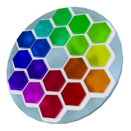
- New Achievement: The Hues Collector
- Unlocked all colors on the color palette.
Gameplay News & Changes¶
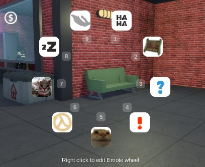
- New Emote Wheel, now used for social gameplay. Emoting, sound quips, spray tags, emoji bubbles. Default Key is C.
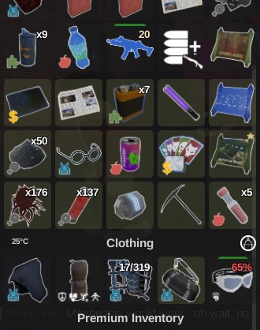
- Equiped storaged such as Duffle Bag now opens with your inventory.
- Hitscan bullets can now pierce destructibles, causing collateral damage, meaning shooting dense part of a destructible will cause it to take multiple instance of damage.
- New melee sounds for slice, punture and impact.
- Added Aim Assistance for mobile/controller players.
- New melee Lunge mechanic on Mega Switch Blade & Broomspear. Lunge forward in any direction when attacking.
- New Blunt melee stat, Damage Block. Blocks a flat damage when equipping a blunt melee weapon.
- Spiked Bat: 10, Sledgehammer: 5, Shovel: 5, NaughtyCane: 25
- Combines with Damage Block from Tire Armor.
- Overworld Zombies are now scaled to your focus level and area difficulty.
- New Squad Hud, now shows on the top right of your screen.
- Squad and teammates now also appear on your map.
- New Authority skill, Seeing Red. Killing enemies enhances your vision in the dark for a duration.
- Crouching now reduces player visibility to Bandits and Rats Npcs.
- Food healing now stacks and status now show heal rate.
- Item drops are refreshed to use a physical model and can be moved around.
- New weapon stat Fire Alert Range. Weapon shots can now alert enemies.
- Melee attacks now also alert close by enemies.
- Throwables will now land where your crosshair aims at.
- Improved 3rd Person camera aim.
- Improved dialogue clarity by seperating dialogues from other missions into their own sub category.
- Character stats now show up when you mouse over Clothing label in your inventory.
- Clicking the button near Armor Label now opens character stats.
The Story Continues¶
- New core mission, Buyer's Remorse, from Joseph.
- Frustrated with the missing deliveries from the Rats, Joseph has decided to take matters into his own hands.
Survival¶
- Survival Wave Pass. Overhauled survival rewards.
- You are given 3 or more reward options every 5 waves.
- You can pick your next reward and continue or end the run to claim your rewards.
- Continuing the run will risk your reward pool of the last 15 waves.
- Every 15 waves you get to claim your rewards during the run without ending it.
- For Hard Mode, reward option prompts only if the wave has a designated reward.
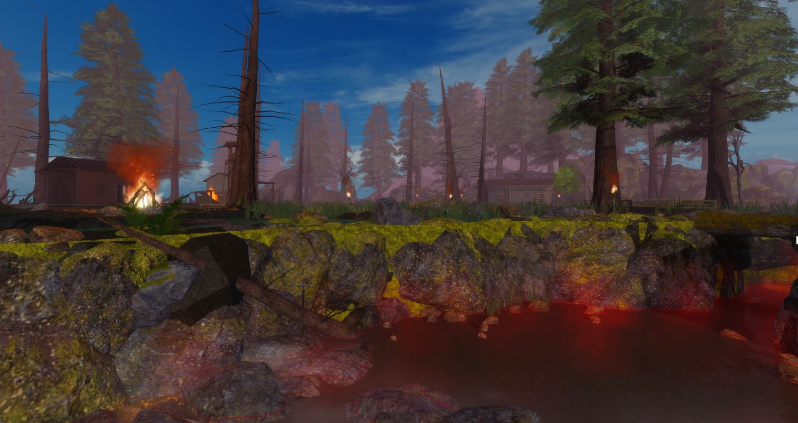
- New Survival Map, Swamplands. A swampy lake cabin with omnious remnants of the gathering place for a suspicious group.
- Added new debuff, RedCrowToxin. When you fall into the inner swamps.
New Faction Features!¶
-
Factions now have funds, this fund can be earned by doing faction missions.
- Mission handlers will decide how much the payout is split between an agent and the faction.
- Faction funds are used to fund features such as the Distributions.
-
Headquarter is now an additional menu with Distributions and Agents of the Month.
- Faction Distributions is free claimable items provided by the faction. Distribution handlers will decide what is distributed.
- Agents of the Month is a leaderboard to show top agent contributions of the month.
-
Monthly stats, your monthly contributions to the faction is now shown on your faction agent profile.
NPC Changes!¶
-
NPCs now have voices generated by TextToSpeech for their dialogue bubbles. Can be turned off in audio settings.
-
New Bandit & Rat behavior tree. They now have more actions such as investigating, hunting, fleeing, healing. They will also communicate with each other after random stuff, alert each other if there're hostiles and if they see a dead body.
- Npcs now have a limited angle of vision, sneaking behind them is now a feature.
- New Corrosive model and abilities. Now has the ability to charge.
- New Zpider model.
- New Shadow model and abilities. Now has the ability, ShadowStrangle, which lifts you up. It also now spawns illusions of itself while invisible in the vicinity.
- New Safehouse Survivors Idle bebaviors, they now roam around and do stuff. e.g. Interact with the vending machine.
- The Billies updated.
- Karl now places explosive barrels around. (what does it even do?)
- Kylde now uses a grenade launcher.
- Reworked Zomborg abilities and updated character model.
- Now has the ability to charge an exploding beam.
- Some Npcs such as Greg now has a routine system that they follow based on the in-game time of day.
- Bandit Helicopter now taunts at you through a megaphone.
- Vex Spitters from Elder Vexeron are now a separate.
- They now spawn inside the Sunken Ship.
Map Updates¶
- New areas in The Residential & The Harbor.
- Water Treatment in the North side of Residentials.
- RAT's Lounge under the Harbor Safehouse.
- Railways Raid reworked, you now have unique objectives in each checkpoint.
- Train is now destructible and attracts Zombies.
Misc and balancing¶
- Mastery window now shows all weapons even at level 0.
- Boss health bars are now visible to lobby spectators.
- Inventory shift+clicking an item that was recently shift moved now moves it back to its previous slot.
- Rewritten all Npcs behavior tree to new behavior tree system.
- Improved hot key clarity.
- New TaskHud now replacing old mission hud.
- Desert Eagle now has 2 Piercing from 0.
- Expanded ZScript API for map interactable scripting.
- Terminal ZSCode now has luau script liniting.
- Adjusted skill grid order in skill tree window.
- Sunken Ship and Abandoned Bunker objectives now uses the regional missions system.